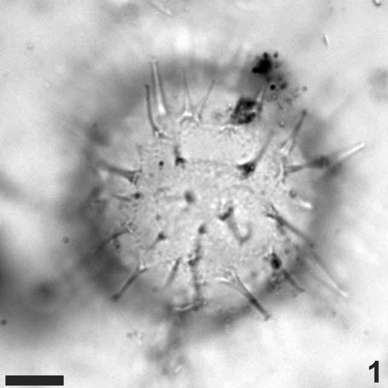
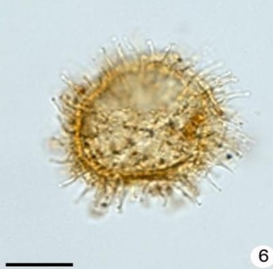
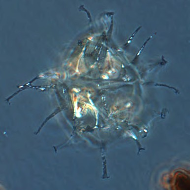
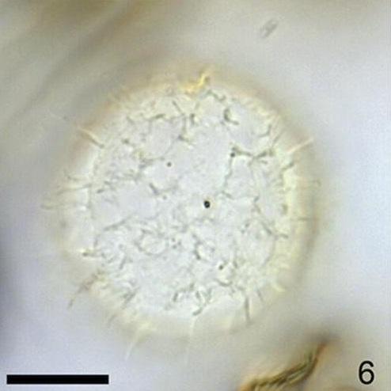
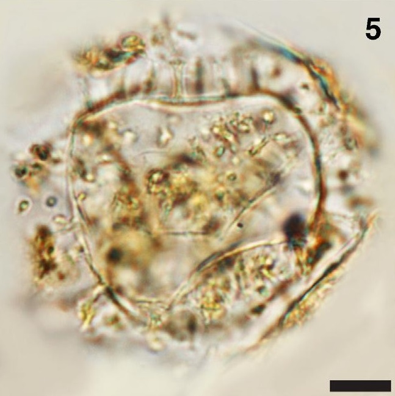

CYSTS LIST
LINGULODINIUM
Surface |
Shape |
Process |
Species |
Central body (um.) |
Process (um.) |
Image |
GranularTransparent |
Spherical to egg-shaped |
Solid. MultifurcateCylindrical, fibrous base |
Operculodiniumaguinawense | 34.5 to 69 (D) |
8 to 16.7 (L) |
 |
GranularTransparent |
Spherical to subspherical |
Hollow to fibrous. SmoothAcumiante, capitate or slightly furcateTips minutely hooked. Cylindrical. |
Operculodiniumcentrocarpum | 32 to 59.5 (D) |
0.5 to 17.5 (L) |
|
Fibroreticulate spongyTransparent |
Spherical |
ConicalMinutely expanded distal tips and are fibrous |
Operculodiniumcrassum | 54 to 74 (D) |
8 to 17 (L) |
|
Fibroreticulate spongyTransparent |
Rounded-polyhedral |
Conical baseMinutely expanded distal tips |
Operculodiniumgiganteum | 74 to 86 (D) |
2 to 4 (L) |
|
FibroreticulateTransparent |
Spherical |
Hollow to fibrousDistally closedAcuminate striated process basis |
Operculodiniumisraelianum | 38 to 69 (D) |
3 to 10 (L) |
 |
GranulateTransparent |
Spherical |
Very smooth baseHollow to fibrousConical and distally closed |
Operculodiniumjanduchenei | 27 to 38 (D) |
4 (L) |
|
MicrogranularTransparent |
Spherical |
SolidAcuminate or bifidFurcate, acuminate and distally sinuous tips |
Operculodiniumlongispinigerum | 27 to 42 (D) |
5 to 14 (L) |
|
Dense net-like structure |
Spherical to subspherical |
Numerous non tabular, solid, smoothLong processes, distally terminate with tiny hook-like branches |
Operculodiniummicrotriainum | - |
- |
 |
Scabrate to microgranulate |
Ovoidal |
CylindricalShort and capitate |
Operculodiniumpiaseckii | 34 to 39 (D) |
2 to 4 (L) |
|
Reticulate to perforate supported by columellae |
Spherical |
Hollow and expanded basesSmall platforms with irregular margin tips |
Operculodiniumtegillatum | 25 to 45 (D) |
3.5 to 9 (L) |
|
SmoothTransparent |
Spherical to subspherical |
Solid, slender, can be branchedOften minutely branched or expanded at their tipsBases joined to adjacent bases by low septa |
Pentapharsodiniumdalei | 19 to 36 (D) |
1 to 8 (L) |
 |
Smooth, spongy-fibrous luxuria appearing loosely granularTransparent |
Spherical |
Numerous irregularly spacedOcassional alignment along cingular marginsSolid and fibrous, expanded base and usually minutely |
Pentaplacodiniumsaltonense | 46 to 71 (D) |
1 to 5.7 (L) |
|
SmoothHyaline |
Elongated, rounded-cylidnrical to peanut-shaped |
Needle-shaped (acicular), each tapering with a wide baseStraight concave shaft ending in a pointed distal tip |
Polarellaglacialis | 12 to 17 (L)8 to 15 (W) |
2.7 to 4.2 (L) |
|
Finely granulateTransparent |
Spherical |
Hollow to fibrous. Single or in clustersDistally open with minutely aculeate distal margins. Some bases are fused |
Polysphaeridiumzoharyi | 40 to 84.8 (D) |
2 to 21 (L) |
 |